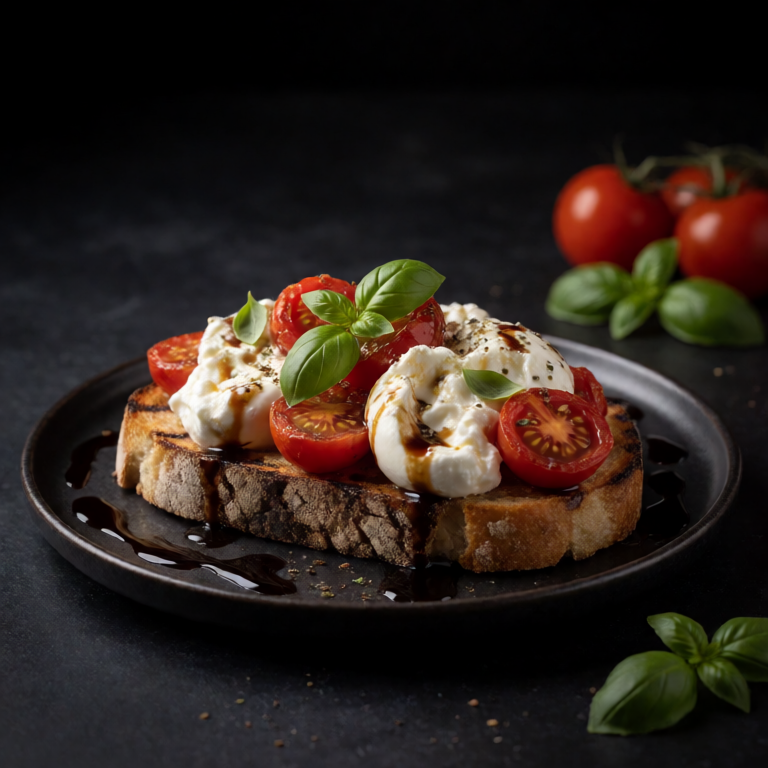
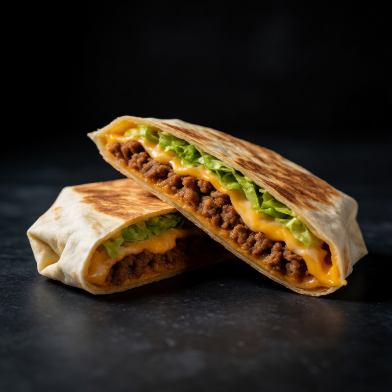
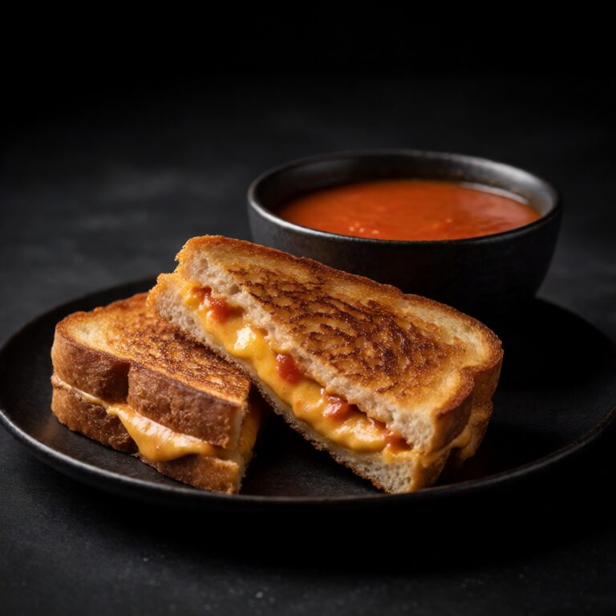

Roasted Beet and Goat Cheese Salad
Daily Recipes
One meal a day, every day. Full recipe, ingredients, and method. This is what foidslop actually means.
 Today's Slop
Today's Slop
August 4, 2026
Korean rice cakes in spicy sweet gochujang sauce. The ultimate comfort street food.
Published August 4, 2026
The complete recipe index
Search by recipe, ingredient, or craving. Try mushrooms, feta, pasta, no cook, or anything else already in your kitchen. Every recipe is written for one person, so you can make dinner without planning for a week of leftovers.
Showing 95 recipes
Roasted Beet and Goat Cheese Salad

Smoked Oyster Toast

Honey Garlic Butter Shrimp

Solo Charcuterie Board with Wine

Mango with Tajin and Lime

Creamed Spinach on Toast

Overnight Oats as Dinner

Takis with Chamoy and Lime

Spicy Tuna Crispy Rice

Roasted Tomato and Burrata Toast

Silky Egg Drop Soup

Creamy Tuscan White Beans

Warm Olives with Orange and Herbs

Pita Pizza

Blistered Padron Peppers

Pan Con Tomate

10-Minute Freezer Fried Rice

Seasonal Fruit and Cheese Plate

Crispy Fried Rice

Creamy Mushroom Toast with Thyme

Everything Bagel Salmon Bites

Carbonara for One

Stuffed Bell Pepper with Rice and Feta

Anchovy Butter Toast

Prosciutto and Fig Toast

Homemade Crunchwrap

Pasta e Fagioli

Labneh with Za'atar and Olive Oil

Frittata for One

Stracciatella with Olive Oil and Grilled Bread

4th of July Burrata Plate

Egg Yolk Garlic Pasta

White Bean Dip with Lemon and Rosemary

Matcha Latte and Banana with Peanut Butter

Panzanella

Savory Cottage Cheese Bowl

Spaghetti Aglio e Olio

Caramelized Onion Dip with Ridged Chips

Loaded Sweet Potato with Black Beans

Hot Honey Butter Toast

Miso Soup with Tofu and Noodles

Sheet Pan Nachos

Medjool Dates with Almond Butter and Flaky Salt

Kimchi Butter Ramen

Avocado and Egg Salad Lettuce Cups

Tinned Fish Board

Cacio e Pepe

Shakshuka for One

Goat Cheese Toast with Honey and Walnuts

Tuna Salad on Crackers

Elevated Canned Tomato Soup

Edamame with Garlic Butter and Chilli

Cherry Tomato and Mozzarella Pasta

Garlic Parmesan Toast

Adult Lunchable Plate

Lox Plate on Cucumber

Spinach Artichoke Dip with Pita Chips

Prosciutto and Melon

Cold Sesame Noodles

Sleepy Girl Mocktail

Guacamole and Tortilla Chips

Peanut Butter Sesame Noodles

Crispy Spiced Chickpea and Feta Bowl

Cucumber Cream Cheese Bites

Classic Cheese Quesadilla

Brown Butter Gnocchi with Sage

Antipasto Plate

Fried Egg on Toast with Hot Sauce

Mezze Plate

Brie and Raspberry Quesadilla

Ricotta Toast with Honey and Pistachios

Stovetop Popcorn Dinner

Caprese with Good Olive Oil

Instant Ramen Upgraded

Pickles and Cheese Board

Soft Pretzel with Beer Cheese Dip

Fruit and Yogurt Bowl with Honey and Granola

Loaded Baked Potato

Greek Salad with Chickpeas

Brie with Jam and Apple on a Board

Scrambled Eggs with Cream Cheese and Chives

Butter Noodles with Parmesan and Black Pepper

Charcuterie Snack Plate for One

Grilled Cheese Dipped in Tomato Soup

Lazy Mac and Cheese

Hummus Plate with Warm Pita and Toppings

Avocado Toast with Everything Bagel and Chilli Flakes

Smoked Salmon Plate with Cream Cheese and Capers

Burrata with Peach and Prosciutto

Tinned Sardines on Buttered Toast

Cottage Cheese and Everything Bagel Plate

Baked Feta Pasta

Chilli Crisp Noodles with Soft-Boiled Egg

Whipped Feta with Hot Honey and Walnuts

The OG Girl Dinner
No recipes match that search. Try another word or filter.